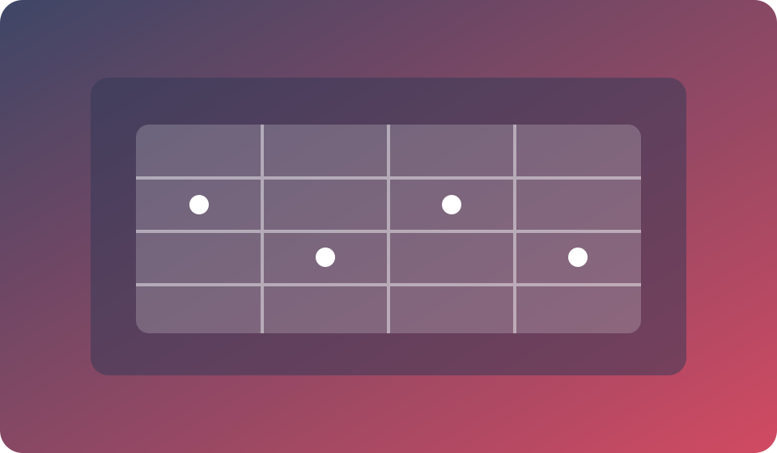
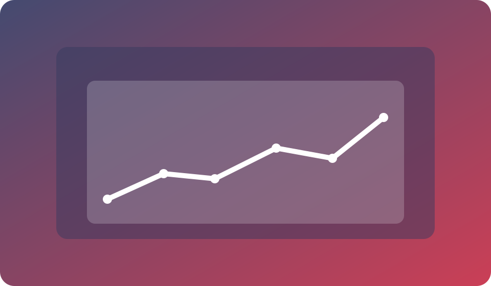

Selection Matrix
Compare tools by performance, quality, and fit to avoid random app usage and confusion.
Live Webinar Class
Understand which AI tools to use for marketing, operations, analytics, and collaboration.


Compare tools by performance, quality, and fit to avoid random app usage and confusion.

Prioritize tools that deliver measurable output gains instead of adding subscription overhead.
Best for builders and teams who want clarity before spending money on AI products. You will finish with a customized tool stack plan and a decision model you can reuse whenever new tools appear.